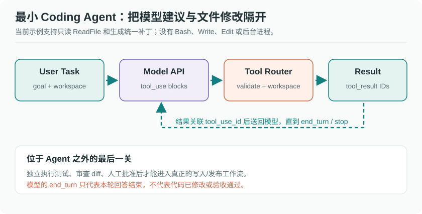
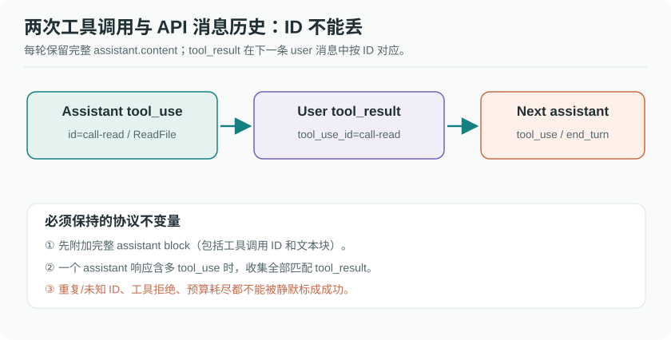

实战：构建可审计的 Coding Agent，从 Tool Use 到补丁预览
把用户任务、模型消息、工具参数验证、工作区策略、补丁预览和外部验收接成闭环；包含零密钥离线演示和可选的只读 Claude API 接入。
从“能聊天”到“能协作修改代码”，最少还缺什么
一个问答机器人只需接收输入并返回文本。Coding Agent 还要知道工作目录、可以读取哪些文件、如何描述变更、怎样用测试判断变更是否正确，以及什么时候必须停下来请人批准。最容易犯的错误是让模型既提出修改又直接执行所有动作，最后把模型的自我总结当作验收报告。
本章从可安全独立运行的只读最小系统入手：模型能调用受限的 ReadFile 和 ProposeEdit 工具；第二个工具只生成统一 diff，不写入磁盘。这样可以让读者验证整个 Tool Use 循环，而不需要把不可信输出直接变成 shell 命令或文件改动。

五层架构：模型、工具、权限、状态、验收
| 层 | 在教程中的实现 | 必须保证什么 |
|---|---|---|
| 模型循环 | SafeCodingAgent | 保存完整消息；stop_reason 具有明确含义 |
| 工具接口 | ReadFile / ProposeEdit | JSON 参数白名单、唯一文本匹配、输出长度上限 |
| 工作区边界 | Workspace | 禁止绝对路径、路径穿越、敏感目录与符号链接 |
| 运行状态 | AgentRun、FeatureLedger | 预算、可恢复任务进度、停止开关 |
| 验收与观测 | CompletionGate、TraceRecorder | 外部证据、权限决策、Token 与错误关联 |
这些是可以组合的教学模块，而不是一个承诺具备 Claude Code 全部能力的框架。尤其是 Workspace 的路径检查不能代替操作系统级 sandbox；真正开放 Shell、Git 写入、部署、网络或 MCP 时，还需要独立权限引擎和执行容器。
完整 Tool Use 消息循环：不能只把工具结果拼成一段文本
Claude Messages API 在需要客户端工具时返回 stop_reason="tool_use"；每个工具调用块含 id、name、input。Harness 必须将完整的 assistant 内容按原有顺序追加到消息历史，然后执行获准工具，并把与 ID 一一对应的 tool_result 放入下一条 user 消息。若同一回复有多个调用，需要为每个 ID 构造结果，而不是只处理第一项。

# 一次 assistant 回复中两项工具调用的简化结构
assistant = {
"role": "assistant",
"content": [
{"type": "tool_use", "id": "read-1",
"name": "ReadFile", "input": {"path": "README.md"}},
{"type": "tool_use", "id": "preview-1",
"name": "ProposeEdit", "input": {
"path": "README.md", "old": "Old", "new": "New"
}}
]
}
user_results = {
"role": "user",
"content": [
{"type": "tool_result", "tool_use_id": "read-1",
"content": "file content", "is_error": False},
{"type": "tool_result", "tool_use_id": "preview-1",
"content": "PROPOSAL ONLY ...", "is_error": False}
]
}真实返回必须与真实调用逐一配对。未知工具名、重复 ID、参数字段不符或文件读取失败都要返回显式错误，不能回退到任意命令执行。end_turn 只表示模型本轮已结束；max_tokens、pause_turn 和未知停止原因要进入可检查的停止路径。
受限工具层：ReadFile 与 ProposeEdit 为什么不提供自动 Apply
ReadFile 只能读取明确选定的工作区内、符合路径策略的 UTF-8 文本；ProposeEdit 要求 old 在文件中恰好出现一次，并产生标准 unified diff 供审查。二者都设定输入与输出长度上限，防止意外把整个仓库和大量敏感数据塞进单轮模型上下文。
显式--workspace 只是给运行时指定范围，不是内核级文件系统隔离。不能把该策略用于抵抗宿主内所有竞态与恶意文件系统操作；如果要给真实生产系统加入修改工具，应使用受控沙箱、人工或独立授权、最小权限、原子提交及恢复机制。
设计边界
本章的“完整”是把一条可检验的最小 Tool Use 路径完整跑通，而非提供拥有 Git 操作、Shell、联网、全自动改码与部署权限的生产级 Agent。未实现的能力必须明确列出，不能用界面宣传替代代码事实。
零密钥端到端演示：真实走过三轮 API 形状的消息
打开终端，执行：
python3 examples/safe_coding_agent.py demo演示在临时工作区创建 greeting.txt，使用确定性 Mock 依次执行：读取文件、生成 Hello 到 Hello, world 的补丁预览、输出最终说明。运行过程中不需要 API Key，不发起网络请求，不执行 Shell，不修改原始项目文件；临时文件在结束时自动清理。
重点观察输出中的 PROPOSAL ONLY — NOT APPLIED，以及 Model status: model_ended_not_verified。即使模型输出“我已经准备了修改”，也不代表它写入文件或通过测试；测试会验证演示文件内容仍为原始 Hello。
选择性接入真实 Claude Messages API
如果已拥有有效 Anthropic API Key，并想自己运行真实只读实验，可以单独安装客户端 SDK，配置密钥，再提供你愿意分享给 API 的非敏感实验目录：
python3 -m pip install anthropic
export ANTHROPIC_API_KEY="YOUR_KEY_FROM_PRIVATE_ENV"
python3 examples/safe_coding_agent.py live \
--workspace ./demo-repo \
--model YOUR_AVAILABLE_MODEL_ID \
--task "Read README.md and propose one wording improvement"模型 ID 请从当期官方可用列表选择，避免照抄可能过时的别名；不同 API 账户的模型访问权限也可能不同。命令中的目录必须提前存在。执行时仍然只会调用 ReadFile 和 ProposeEdit；SDK 会把你允许读取并由模型请求到的文件内容送往模型提供商，请勿使用包含私人密钥或机密源码的目录。
本仓库 CI 只验证离线模拟与 Tool Use 结构，不验证真实模型返回的正确率、资费或线上可用性。若需要官方内置 Bash/Edit、Hooks、Sessions、Subagents 和丰富的权限控制，应优先使用 Claude Agent SDK，它和这里自行管理 Messages API 的客户端循环不是同一个产品层。
结束回答和交付成功之间还有两道门
第一道门是技术验收：补丁是否可应用、单元测试是否通过、静态检查和浏览器验收是否通过、diff 是否只涉及允许范围。第二道门是人工或组织授权：是否同意写入、提交、发起 PR、合并或部署。这两个门不应该用模型自报、工具返回的“success”文本或一次 end_turn 取代。
本仓库的 CompletionGate 可以独立记录验收证据。将 AgentRun 视为候选提议，由外部流程执行测试和审查后，再检查 CompletionGate.decide() 的结果。该模型有意不执行外部工作，因为“能够执行”与“已被批准执行”是不同状态。
故障注入与最终验收：六项不可省略的回归
运行 python3 -m unittest discover -s examples -p 'test_*.py'。针对本章的测试尤其覆盖：
- 离线 3 轮工具调用后，文件没有被模型修改。
- 多个
tool_use都产生正确的tool_use_id对应结果。 - 未知 Bash 工具和
../路径逃逸返回错误，而不是执行。 - 重复工具 ID 在执行前被拒绝，防止错误关联或重放。
max_tokens与轮数预算耗尽不被误判为任务完成。- 不唯一的 Edit 片段、未声明字段或超长内容拒绝处理。
参考资料
- Anthropic Messages API: Tool use — 工具定义、tool_use / tool_result、并行调用及 stop_reason
- Claude Agent SDK Overview — Agent SDK、客户端 SDK、CLI 和 Managed Agents 的职责边界
- Claude Agent SDK Permissions — 权限规则、Hooks、交互式授权及拒绝优先
- Claude Agent SDK Sessions — 对话恢复与文件 checkpoint 的区别
- Claude Code Sandboxing — 操作系统层文件和网络约束的真实边界